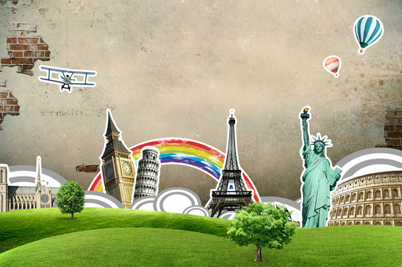
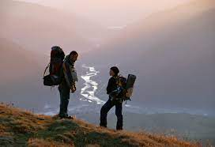
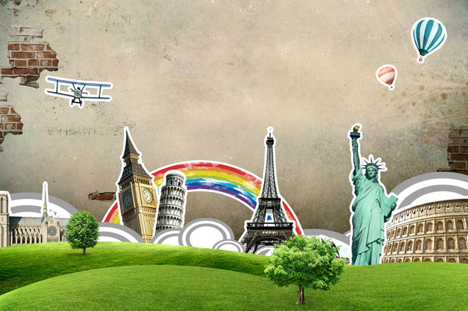
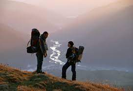

Подорожі допомагають нам відпочити від побуту, забути про роботу, струсити з себе стрес і проблеми, а також переоцінити своє життя. Відвідуючи інші країни або міста, відпочиваючи на курортах, плескаючись в теплому морі, ми по-новому оцінюємо світ, а також краще пізнаємо себе. Лише в подорожах виходить повністю розслабитися, відкритися і впорядкувати свої думки.
 


